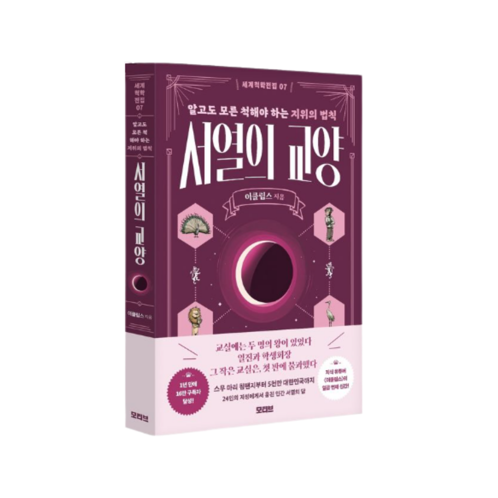

←
도구인가, 사람인가
STAGE 1
1/5
STAGE 1
당신의 선택
그 다음 벌어지는 일
💡
발견한 원칙
💬
다음으로
🪞
당신의 관계 방식
📸 이미지 저장하기
친구한테 시켜보기
탐험 지도로 돌아가기
서열, 지위, 체면의 한복판에서 사람을 다시 본 자들의 사유.

서열의 교양
알고도 모른 척해야 하는 지위의 법칙
시리즈 더 보기
초월자의 조건
싸움의 교양
훔친 부 편